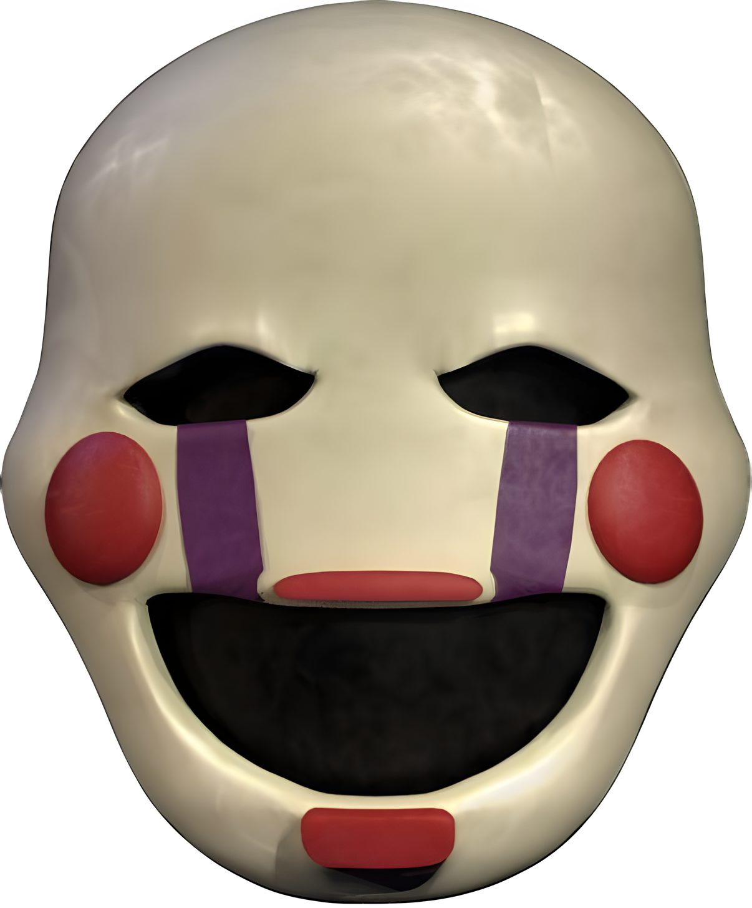

Fátima
Pase lo que pase y hacia dónde gire mi vida, siempre habrá un lugar en mi corazón que te recordará con respeto, con un gran amor y siempre como la niña más linda del universo entero
Esto lo escribi con mucho cariño mi amor
Hola, mi cosita...
No recuerdo exactamente desde cuándo empecé a hacer esto en las noches, pero cada recuerdo o pensamiento sobre ti lo guardo en lo más profundo de mi alma y, bueno, ya hace un tiempo que tomamos rumbos distintos, y desde entonces no ha habido un solo día en el que cada vez que te pienso, vienen a mi mente todos esos momentos donde reímos juntos y donde, sin importar nada, éramos solamente tú y yo.
Quiero decirte desde lo más profundo y sincero de mi ser que te extraño cada día de mi vida. Me arrepiento con toda el alma de cada segundo que he estado lejos de ti, de los errores que cometí, de los silencios y de no haber sabido cuidar a tiempo lo más hermoso que pude tener: tú.
La verdad te quería decir algo y es que en verdad nunca te dejaré de amar, Fati, y daría cada parte de mí para poder estar a tu lado siempre. Quizá ahora no quieras saber nada de mí o estés mejor sola, pero ten por seguro que siempre tendrás un enorme espacio en mi corazón.
Pero por encima de cualquier deseo mío, hay algo que jamás cambiará sin importar lo que pase en mi vida: siempre, absolutamente siempre, te desearé lo mejor de este universo, cosita. Deseo que tus ojitos marrones tan bonitos que tienes nunca dejen de brillar, que alcances cada meta de las que me hablabas y que encuentres esa paz que necesitas en tu vida. Porque eres, sin duda alguna, una chica increíble y demasiado hermosa también.
Recuerdo estas cosas que te gustan... c:
Los gatitoooos
Siempre me encantó la manera en cómo te cambiaba la voz cada vez que encontrabas un gatito por la calle, recuerdo esa llamada donde me mostraste a ese gatito que te había acompañado mientras caminabas y se sentía tan lindo cómo me hablabas con tanta emoción, Dios, tan bonita, jamás pierdas ese amor tan bonito que tienes por los animales, cosita.
Esa forma tan linda en la que tú quieres a los animalitos hace ver el corazón y la forma de amar tan linda que tienes y cada vez que veo a un gatito, sonrío demasiado rápido y pienso en lo feliz que te pondrías si lo vieras, y una cosa más, ahora siempre cuando voy a un campo lo primero que hago es buscar un caracol, y me pongo a pensar en ti, porque si recuerdas una vez me dijiste que mi maldición sería ver un caracol y acordarme de ti, yo no lo veo como una maldición igual, de hecho es una de las maneras más puras que tengo de acordarme de ti, algún día aprender a prepararlos igual JEJEJE.
El gran puppet

Lo que recuerdo sobre esto fue cuando hablamos por TikTok y había unos peluches de FNAF y me dijiste que te gustaba mucho Puppet, (eso fui y lo anoté en mi bloc de notas de la PC), y siempre recuerdo feliz que me dijiste sobre que cuando estemos juntos ibas a contarme todo el lore de FNAF, y yo te decía que re feliz de que eso pase, y sí, también pienso en ti cada que mencionan algo sobre FNAF, o sobre cada cosa que te guste, en realidad, porque para mí es una forma en la cual puedo recordar a la mujer que más amo.
Si alguna vez sientes que no puedes más, te quieres rendir o dudas de la increíble persona que eres, recuerda que en algún lugar del mundo hay alguien que siempre va a creer en todo el potencial que tienes, cosita, y que siempre le pedirá a Dios por la chica más increíble del universo: tú.